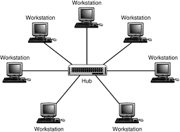
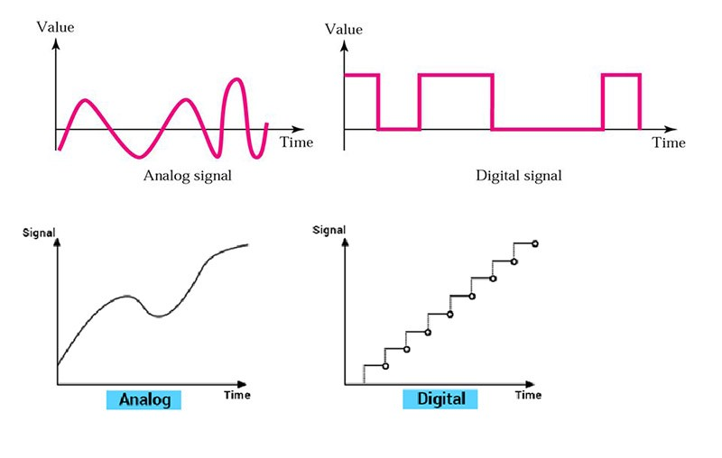

Computer Network
Computer Network establish a communication between the system in order to share information and resources
between them.
Advantage of Networking.
- Files can easily be shared between users.
- Security
- Easy to backup the data as all the data is stored on the file server.
Disadvantege of Networking
- Purchasing the network cable and file server can be expensive
- Viruses can spread quickly through the network.
It is a pictorial representation of computer network that spread throughout the area.
Types of Network Topology.
- Mesh Topology
- Ring Topology
- Star Topology
- Bus Topology
- Hybrid Topology
Mesh Topology

In mesh topology ,each nodes has direct and dedicated connection with all the remaining nodes within the network.
Total number of links with individual node of network= n-1
Total number of links in the network= n(n-1)/2
where n=Total number of nodes in the network.
Ring Toplology

Each node has link with neighbour nodes.
In ring topology, there are two monitors:-
- Primary Monitor
- Secondary Monitor
These monitor are responsible for generating tokens through network .
Following steps involve in transfer of tokens,data,acknowledgement within ring:-
- Unidirectional flow of data.
- Token is generated by monitor encharge node.
- Acquire node grab the token and release data.
- Node which needs the data aquire the data and release the acknowledgement of accepting data.
- Acknowledgement is receive to source node.
- Finally it release token in the ring for further process.
Advantage of ring topology
- Less number of links
- Installation of node is easy.
Disadvantage of ring topology
- Speed is slow
- If one node fails it damage whole network.
Total number of links in the network= number of nodes.
Star Toplology

Each node has direct and dedicated connection with the central processing device.
Either this device is Switch or Hub
Bus Topology

Each node has direct and dedicated connection with the backbone cable. while transferring data, each node
generate a signal called CSMA(Carrier Sense Multiple Access) in the backbone cable to check either the cable is
idle or busy.

This topology is the combination of two or more topology.
Factor affecting network topology
some network criteria:-
- Reliability
- Frequency of Network Failure
- Frequency of recovery from network failure
- Catastrophe
- Security
- Performance
- Number of nodes
- Distance
- Hardware
- Software
Signals
Computer networks are designed to transfer data from one point to another. During transit data is in the form of
electromagnetic signals. Hence it is important to study data and signals before we move to further concepts in
data communication.
NOTE:
“To be transmitted Data must be converted into signals.”
Data can :-
- Analog
- Digital
a) Analog data refers to information that is continuous. For example, sounds made by a human voice, heat
b) Digital data refers to information that has discrete states. Digital data take on discrete values. For
example, data are stored in computer memory in the form of 0s and 1s
-
Signals can be:-
- 1. Analog Signal: They have infinite values in a range.
- 2. Digital Signal: They have limited number of defined values.

ANALOG SIGNAL
- An analog signal has infinitely many levels of intensity over a period of time
- A simple analog signal is a sine wave that cannot be further decomposed into simpler signals.
Characteristic by analog signal:
- Peak Amplitude
- 1. The amplitude of a signal is the absolute value of its intensity at time .
- 2. The peak amplitude of a signal is the absolute value of the highest intensity.
- 3. The amplitude of a signal is proportional to the energy carried by the signal.
- Frequency
- 1.Frequency refers to the number of cycles completed by the wave in one second.
- 2.Period refers to the time taken by the wave to complete one second.
- Phase
- 1. Phase describes the position of the waveform with respect to time (specifically relative to time 0).
- 2. Phase indicates the backward or forward shift of the waveform from the axis.
- 3. It is measured in degrees or radian.
Transmission of Digital signal
signal can be transmitted in the following two ways:
- Baseband Transmission
- Broadband Transmission
Baseband Transmission
- Uses Digital Signal in data transmission.
- The signal is transmitted without making any change to it (i.e. without modulation). It sends binary values
directly as binary pulses of different voltage levels.
- In baseband transmission, the bandwidth of the signal to be transmitted has to be less than the bandwidth
of the channel.
Broadband Transmission
- Uses Analog Signal in data transmission.
- A digital signal cannot be transmitted directly through it. In broadband transmission
we use modulation, i.e. we change the signal to analog signal before transmitting it.
Network Performance
- Bandwidth
- Throughput
- Latency
- Propagation time
- Transmission time
- Queuing time
- Processing time